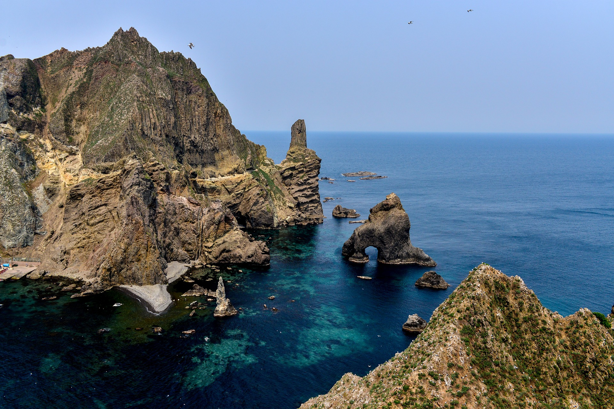

<!doctype html>
<html>
<head>
    <meta charset="utf-8">
  </head>
  <body>

  </body>
</html>
<head>
  <title>About Dokdo</title>
  <meta charset="utf-8">
</head>

<body>
    <h1><a href="1.html">Dokdo</a></h1>
  <ol>
    <li><a href="2.html">All of Dokdo</a></li>
    <li><a href="3.html">Where is Dokdo?</a></li>
    <li><a href="4.html">Who is the land of Dokdo?</a></li>
  </ol>

  <h2>Where is Dokdo?</h2>
  <p><strong>South Korea</strong> classifies the islets as Dokdo-ri, Ulleung-eup, Ulleung County, North Gyeongsang Province, and calls them <strong><a href="https://goo.gl/maps/cUBXKK9D9zUmqhVM9" target="_blank" title="GoogleMap Dokdo"><u>Dokdo</u></a></strong></p>
  <p>The Liancourt Rocks dispute is a territorial dispute between South Korea and Japan.</p>
     
</body>
</html>
